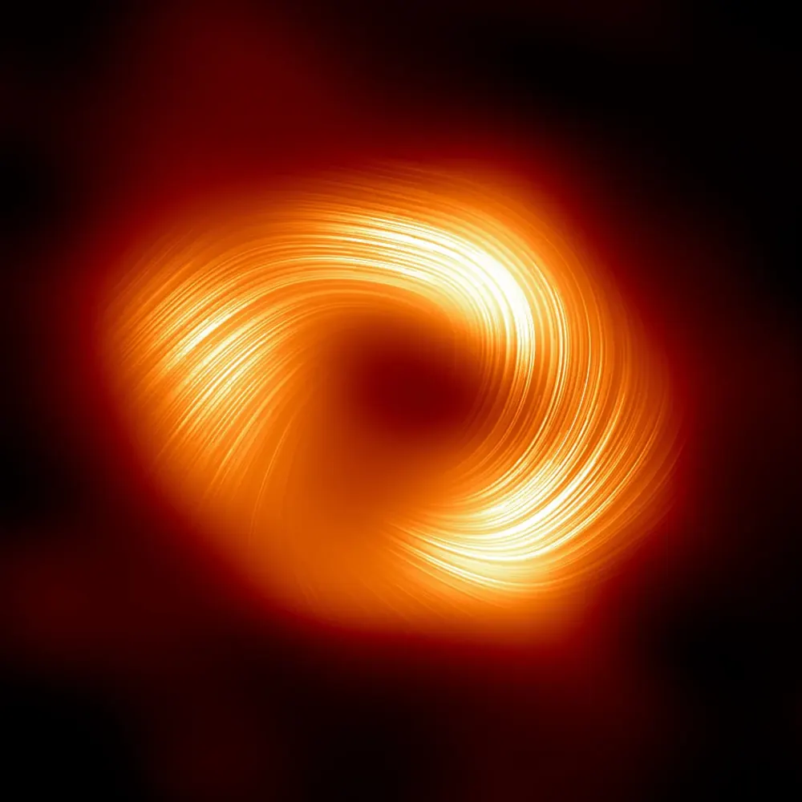
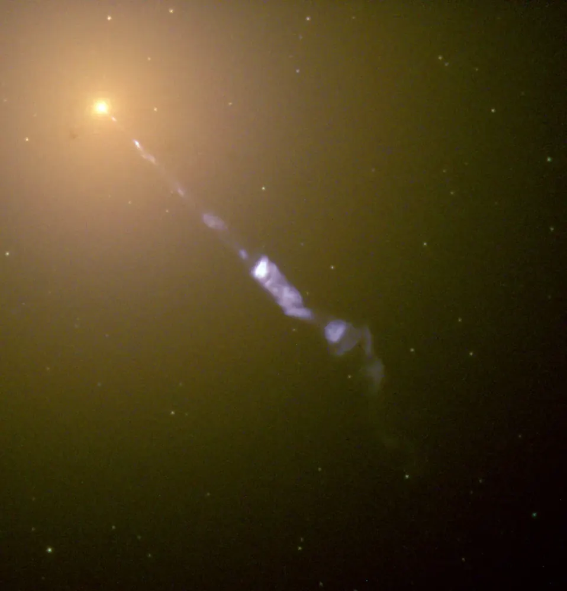
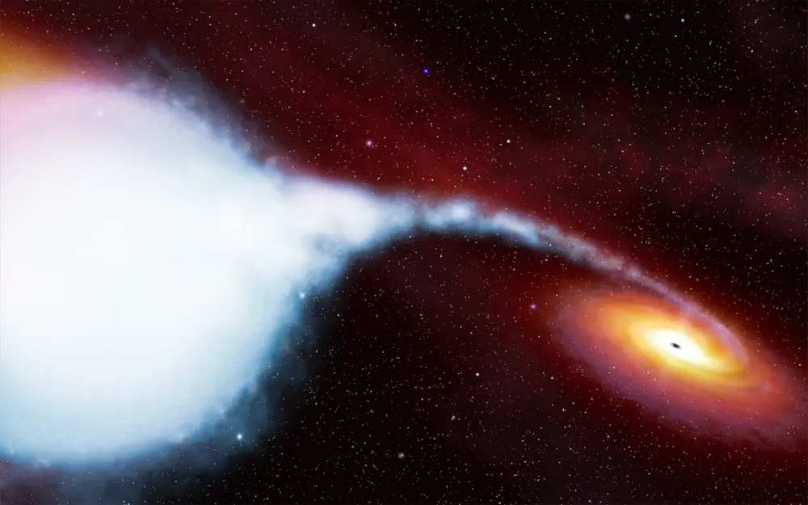

← Black holesब्लैक होलAgujeros negrosBuracos negrosTrous noirsالثقوب السوداء
Famous black holesमशहूर ब्लैक होलAgujeros negros famososBuracos negros famososTrous noirs célèbresثقوب سوداء مشهورة
Six black holes that changed what we know, from our own Galaxy to the far side of the universe.छह ब्लैक होल जिन्होंने हमारी समझ बदली, हमारी अपनी आकाशगंगा से ब्रह्मांड के दूर कोने तक।

📷 EHT Collaboration · CC BY 4.0

📷 EHT Collaboration · CC BY 4.0

📷 EHT Collaboration · CC BY 4.0

📷 NASA and The Hubble Heritage Team (STScI/AURA) · Public domain

📷 NASA, ESA, CSA, STScI, CXC (via NASA's Webb Flickr) · CC BY 2.0

📷 ESA/Hubble (illustration) · Public domain
Sagittarius A*
The black hole at the centre of our Galaxy. Stars orbit it; one of them, S2, goes round every 16 years. Its first picture was published in May 2022. The 2020 Nobel Prize in Physics honoured Reinhard Genzel and Andrea Ghez for showing it is there.हमारी आकाशगंगा के केंद्र का ब्लैक होल। तारे इसका चक्कर लगाते हैं; उनमें से S2 हर 16 साल में एक चक्कर पूरा करता है। इसकी पहली तस्वीर मई 2022 में आई। 2020 का भौतिकी का Nobel Prize Reinhard Genzel और Andrea Ghez को यह दिखाने के लिए मिला कि वह वहाँ है।
M87*
In the giant galaxy Messier 87. On 10 April 2019 it became the first black hole ever pictured, by the Event Horizon Telescope. It fires a jet that stretches thousands of light-years.विशाल galaxy Messier 87 में। 10 अप्रैल 2019 को Event Horizon Telescope ने इसकी तस्वीर ली, जो किसी भी ब्लैक होल की पहली तस्वीर थी। यह हज़ारों प्रकाश-वर्ष लंबी jet छोड़ता है।
Cygnus X-1
One of the first strong black hole candidates, from the early 1970s. In 1974 Stephen Hawking bet Kip Thorne that it was not a black hole. He conceded in 1990, once the evidence was overwhelming.1970 के दशक की शुरुआत में सामने आए पहले मज़बूत ब्लैक होल उम्मीदवारों में से एक। 1974 में Stephen Hawking ने Kip Thorne से शर्त लगाई कि यह ब्लैक होल नहीं है। सबूत पक्के होने पर उन्होंने 1990 में हार मान ली।
Gaia BH1
The nearest known black hole so far, found in 2022 from the tiny wobble it causes in a Sun-like star that orbits it. It is quiet: nothing is falling in, so it gives off no X-rays.अब तक का सबसे नज़दीकी ज्ञात ब्लैक होल, जो 2022 में उस सूरज जैसे तारे की हल्की डगमगाहट से मिला जो इसका चक्कर लगाता है। यह शांत है: इसमें कुछ गिर नहीं रहा, इसलिए यह X-rays नहीं छोड़ता।
GW150914
On 14 September 2015 LIGO felt the first gravitational waves ever detected, from two black holes merging. About three Suns of mass were turned into the energy of the waves. The 2017 Nobel Prize in Physics went to the LIGO founders.14 सितंबर 2015 को LIGO ने पहली बार गुरुत्वीय तरंगें पकड़ीं, जो दो ब्लैक होल के विलय से आई थीं। लगभग तीन सूरज का द्रव्यमान तरंगों की ऊर्जा में बदल गया। 2017 का भौतिकी का Nobel Prize LIGO के संस्थापकों को मिला।
TON 618
One of the most massive black holes known. It powers a quasar, a young galaxy core so bright it outshines everything around it. Mass estimates vary between studies.अब तक ज्ञात सबसे भारी ब्लैक होलों में से एक। यह एक quasar को ऊर्जा देता है, किसी युवा galaxy का केंद्र जो इतना चमकीला है कि अपने आसपास सबको फीका कर देता है। अलग-अलग अध्ययनों में इसका द्रव्यमान अलग निकलता है।
Numbers are rounded from published measurements and some are still being refined.आँकड़े प्रकाशित मापों से गोल किए गए हैं और कुछ पर अब भी काम चल रहा है।